Client case study · CIS 3030, MSU Denver
Caso de cliente · CIS 3030, MSU Denver
Tienda Salvadoreña: digital preservation of a 30-year legacy
Tienda Salvadoreña: preservación digital de un legado de 30 años
The technical architecture, design decisions, and cultural impact behind the website for Denver's oldest Salvadoran grocery store — built without frameworks.
La arquitectura técnica, las decisiones de diseño y el impacto cultural del sitio web de la tienda salvadoreña más antigua de Denver — construido sin frameworks.
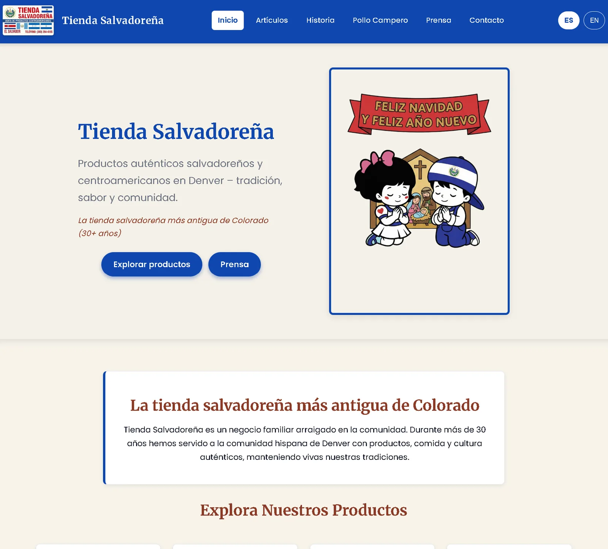
Overview
Resumen
Purpose
Propósito
A complete digital presence for Denver's oldest Salvadoran grocery store (30+ years), built for CIS 3030 at MSU Denver while honoring Jorge and Delia Romero's story.
Una presencia digital completa para la tienda salvadoreña más antigua de Denver (más de 30 años), construida para CIS 3030 en MSU Denver honrando la historia de Jorge y Delia Romero.
Goals
Objetivos
Preserve cultural heritage, provide bilingual business information, deliver advanced features without frameworks, improve search visibility, and meet WCAG 2.1 AA.
Preservar el patrimonio cultural, ofrecer información bilingüe, lograr funciones avanzadas sin frameworks, mejorar la visibilidad en buscadores y cumplir WCAG 2.1 AA.
Building it
La construcción
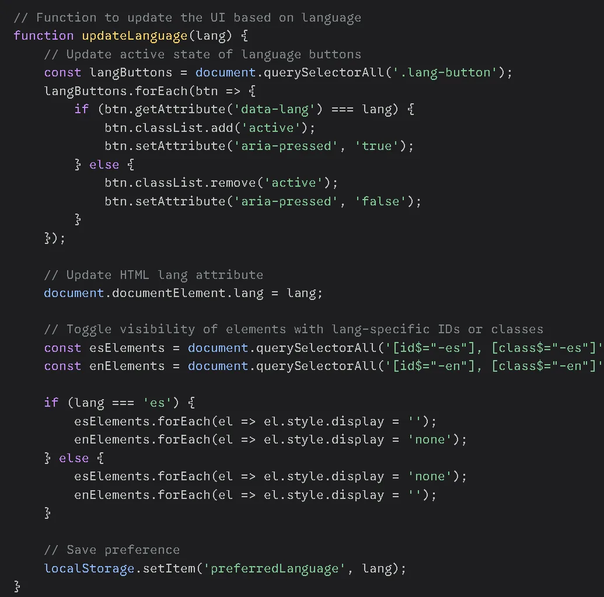
Custom translation engine (500+ keys)
Motor de traducción propio (500+ claves)
A bilingual system in pure JavaScript manages more than 500 translation keys across 6 pages and remembers the language with localStorage.
- Separate English and Spanish translation sets, toggled by one function
- Handles text, HTML, alt text, meta descriptions, and placeholders
- Updates every element instantly, without a page refresh
Un sistema bilingüe en JavaScript puro gestiona más de 500 claves de traducción en 6 páginas y recuerda el idioma con localStorage.
- Conjuntos de traducción separados en inglés y español, controlados por una función
- Maneja texto, HTML, texto alternativo, metadescripciones y marcadores
- Actualiza cada elemento al instante, sin recargar la página
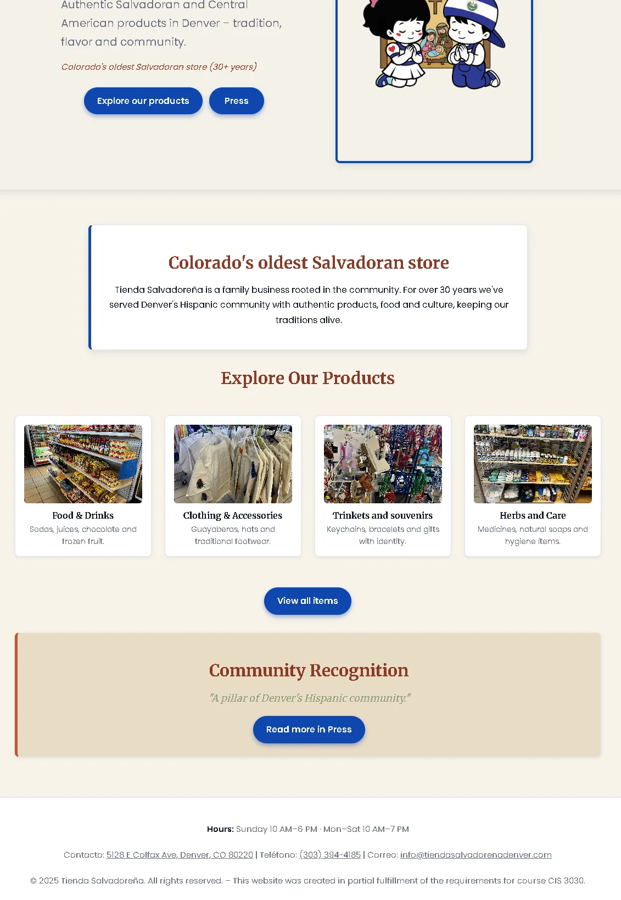
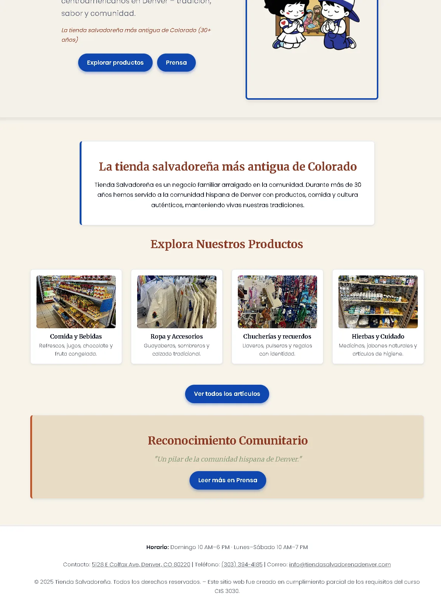
Two languages, one layout
Dos idiomas, un diseño
The English and Spanish versions share an identical DOM, so switching never shifts the layout. The bilingual experience connects older diaspora members with younger, English-dominant generations.
Las versiones en inglés y español comparten el mismo DOM, así que cambiar de idioma nunca mueve el diseño. La experiencia bilingüe conecta a la diáspora mayor con generaciones jóvenes que hablan más inglés.
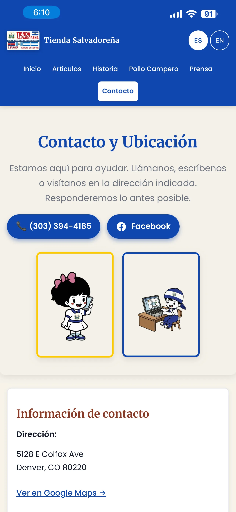
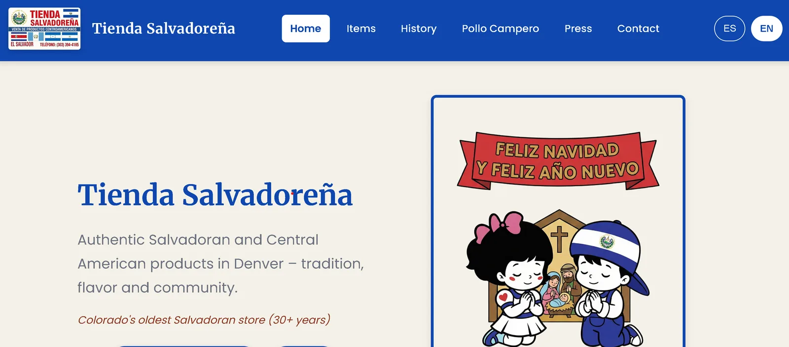
Responsive CSS Grid from 320px to 1920px
CSS Grid adaptable de 320px a 1920px
Layouts adapt automatically with clamp(), minmax(), and auto-fit: single-column stacks on phones, 2–3 columns on tablets, and 3–4 columns with generous whitespace on desktop.
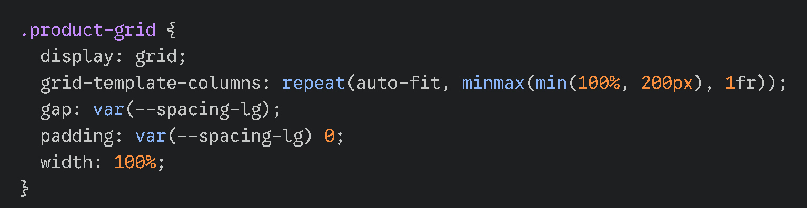
Los diseños se adaptan con clamp(), minmax() y auto-fit: una columna en teléfonos, 2–3 en tabletas y 3–4 con amplio espacio en escritorio.
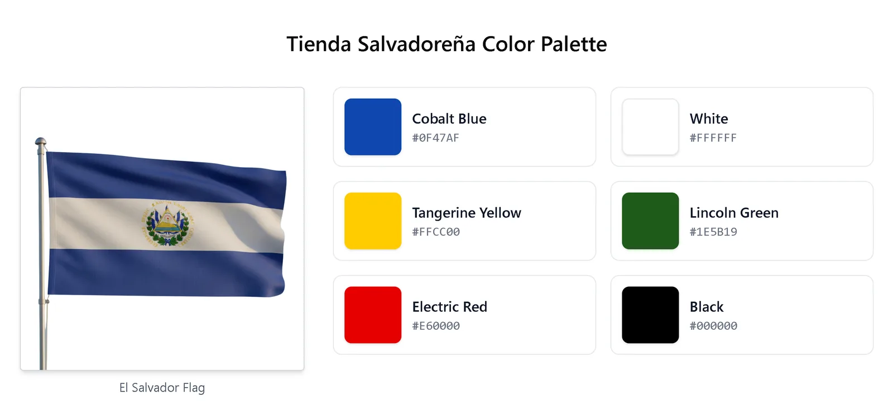
A palette from the Salvadoran flag
Una paleta de la bandera salvadoreña
Cobalt blue, tangerine yellow, and Lincoln green create a cohesive identity that celebrates the store's heritage while keeping accessible contrast.
Azul cobalto, amarillo tangerina y verde Lincoln crean una identidad coherente que celebra la herencia de la tienda con contraste accesible.
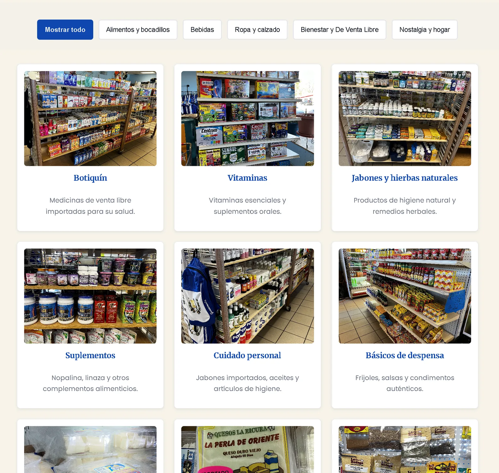
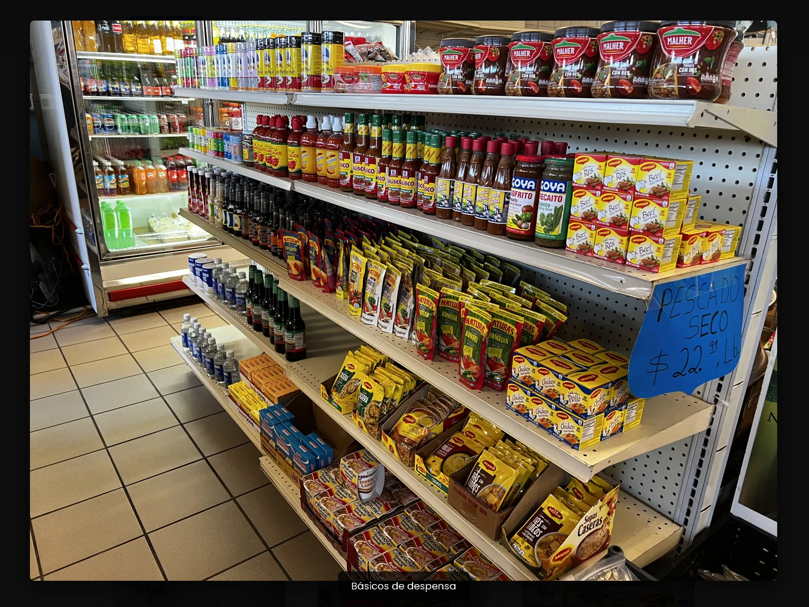
Product filtering and an accessible lightbox
Filtros de productos y un lightbox accesible
The Items page has 29 product cards filtered by category (food, drinks, clothing, wellness, nostalgia). Images open in a modal that traps focus while open, closes with Esc, locks page scrolling, and returns focus when it closes.
La página de artículos tiene 29 tarjetas filtradas por categoría (comida, bebidas, ropa, bienestar, nostalgia). Las imágenes abren un modal que mantiene el foco, se cierra con Esc, bloquea el desplazamiento y devuelve el foco al cerrar.
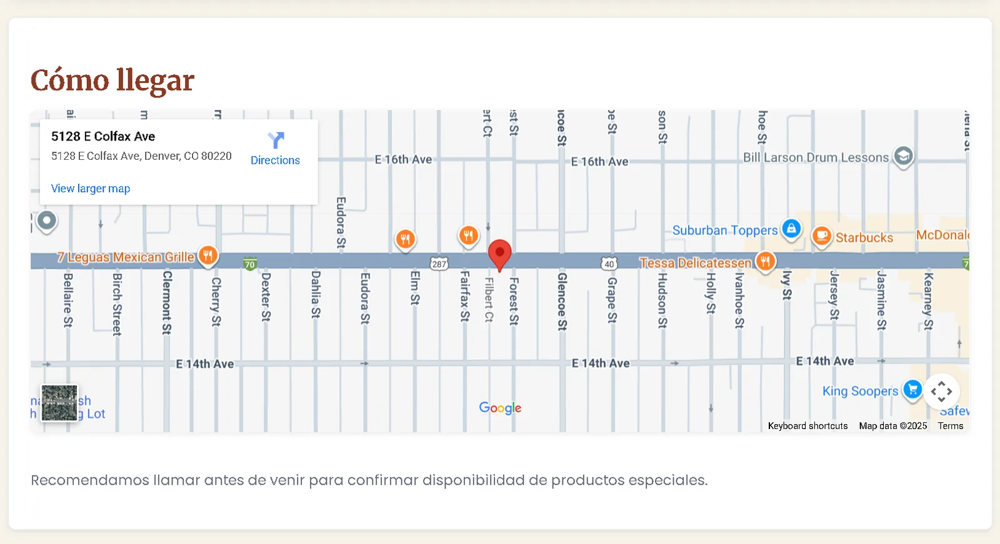
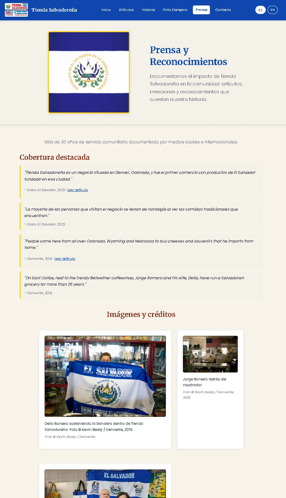
Location, contact, and community recognition
Ubicación, contacto y reconocimiento
An embedded Google Map gives directions, hours, and phone, email, WhatsApp, and Facebook contact. A press page documents coverage in El Diario El Salvadoreño, Denverite, and local outlets — the store's role as a cultural anchor.
Un mapa de Google integrado ofrece indicaciones, horario y contacto por teléfono, correo, WhatsApp y Facebook. Una página de prensa documenta la cobertura en El Diario El Salvadoreño, Denverite y medios locales — el papel de la tienda como ancla cultural.
Challenges & solutions
Desafíos y soluciones
Strict "no frameworks" rule
Regla estricta de "sin frameworks"
Language switching needed real state management, but React and Vue were not allowed. I built a lightweight vanilla-JS engine that swaps text and ARIA labels instantly.
El cambio de idioma requería manejo de estado, pero React y Vue no estaban permitidos. Construí un motor ligero en JS que cambia textos y etiquetas ARIA al instante.
Accessibility traps
Trampas de accesibilidad
Custom modals often trap keyboard focus or fail screen readers. The lightbox cycles focus inside the open modal and restores it on close.
Los modales propios suelen atrapar el foco o fallar con lectores de pantalla. El lightbox mantiene el foco dentro del modal y lo restaura al cerrar.
Bilingual SEO
SEO bilingüe
Search engines need to understand both languages. Distinct lang attributes and semantic HTML5 make the language context explicit.
Los buscadores deben entender ambos idiomas. Atributos lang distintos y HTML5 semántico hacen explícito el contexto.